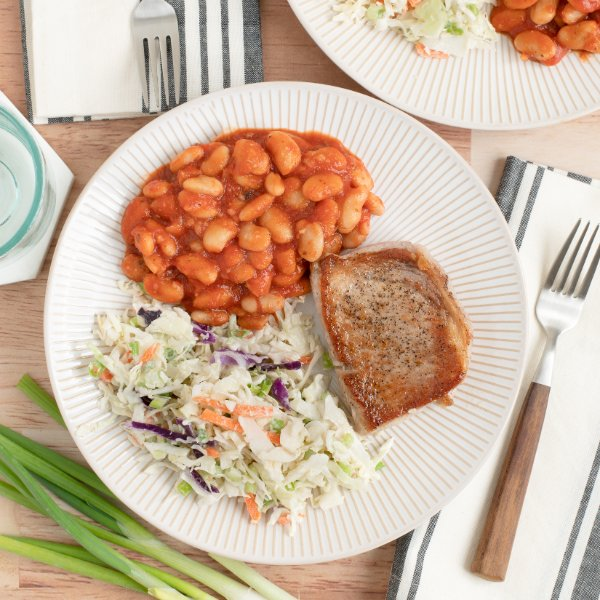

Seared Pork Chop with BBQ Beans & Green Onion-Ranch Cabbage Slaw

Total Time
25 min
Nutrition (Per Serving)
703.5 kcalCalories
45.9 gProtein
58.2 gCarbs
34.4 gFat
Full nutrition table
| Calories | 703.5 kcal |
| Total fat | 34.4 g |
| Saturated fat | 8.7 g |
| Trans fat | 0.2 g |
| Cholesterol | 89.5 mg |
| Sodium | 1445 mg |
| Carbohydrates | 58.2 g |
| Fiber | 13.8 g |
| Sugars | 15.3 g |
| Protein | 45.9 g |
| Potassium | 1662.7 mg |
| Calcium | 204.1 mg |
| Iron | 5.4 mg |
| Vitamin A | 420.4 IU |
| Vitamin C | 41.4 mg |
| Vitamin D | 16 IU |
Cookware
Ingredients
- 2 (15 oz) canscannellini (white kidney) beans
- 1 small bunchgreen onions (scallions)
- 1 (24 oz) jarmarinara sauce
- 4pork chops, boneless
- ¼ cupranch dressing
- 1 (14 oz) bagshredded cabbage (coleslaw mix)
- barbecue sauce
- black pepper
- cumin, ground
- extra virgin olive oil
- salt
Steps
- Drain and rinse beans; place in a medium saucepan.2 (15 oz) cans cannellini (white kidney) beans
- Add marinara sauce, barbecue sauce, and spices to the pan with the beans. Stir to combine and bring to a simmer.1 (24 oz) jar marinara sauce
¼ cup barbecue sauce
1 tsp cumin, ground
½ tsp salt
¼ tsp black pepper - Once simmering, reduce heat to low and cook, stirring occasionally, until beans are tender and sauce has thickened, 8-10 minutes. Remove from heat.
- Meanwhile, preheat a large skillet over medium-high heat.
- While the skillet heats up, pat the pork chops dry with paper towels and place on a plate. Season with salt and pepper on both sides.4 pork chops, boneless
½ tsp salt
¼ tsp black pepper - Once the skillet is hot, add oil and swirl to coat the bottom. Add chops and pan-fry until golden brown and cooked through, 3-4 minutes per side. Transfer to a clean plate.4 tsp extra virgin olive oil
- While the chops are cooking, wash, dry, trim, and cut green onions crosswise into thin pieces. Place in a medium bowl.1 small bunch green onions (scallions)
- Add shredded cabbage and dressing to the bowl with the green onion. Stir to combine the slaw.1 (14 oz) bag shredded cabbage (coleslaw mix)
¼ cup ranch dressing - To serve, divide pork chops, beans, and slaw between plates. Enjoy!